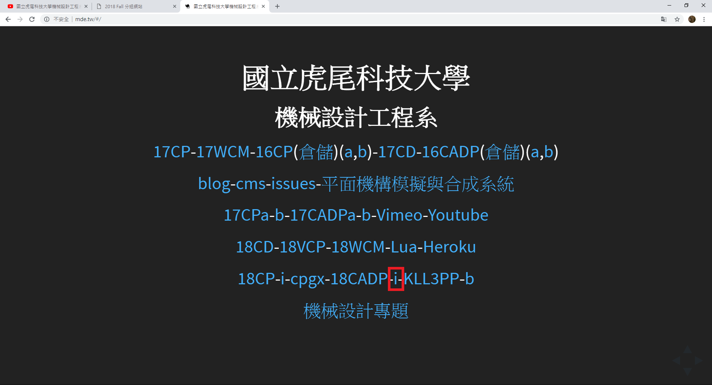
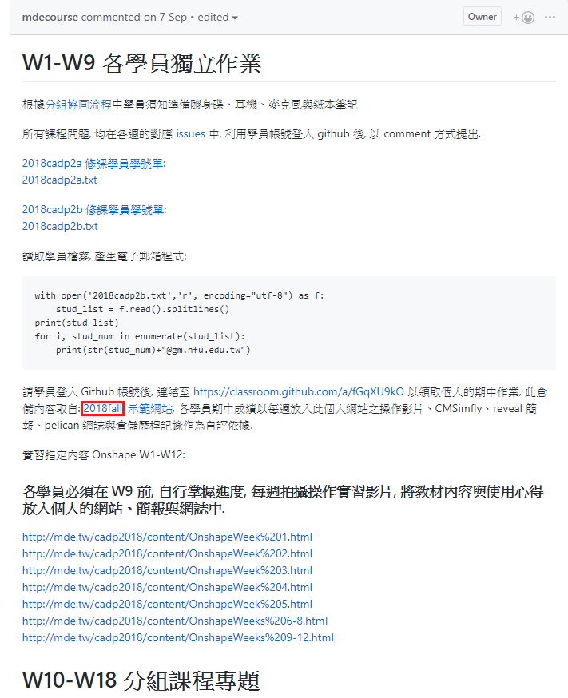
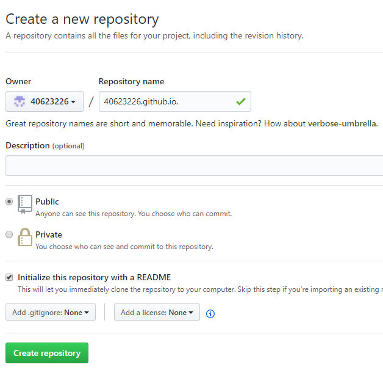
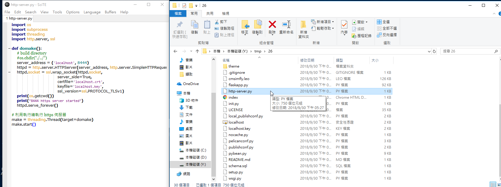
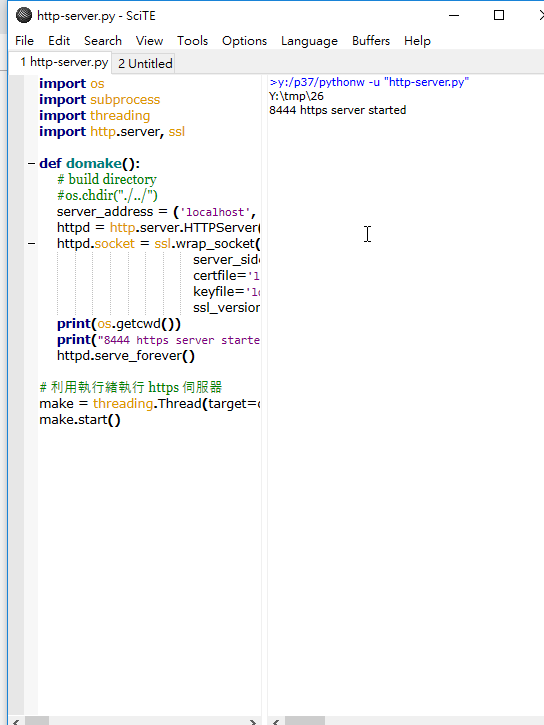
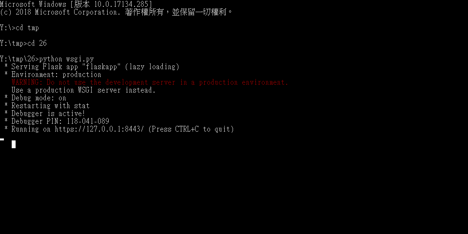
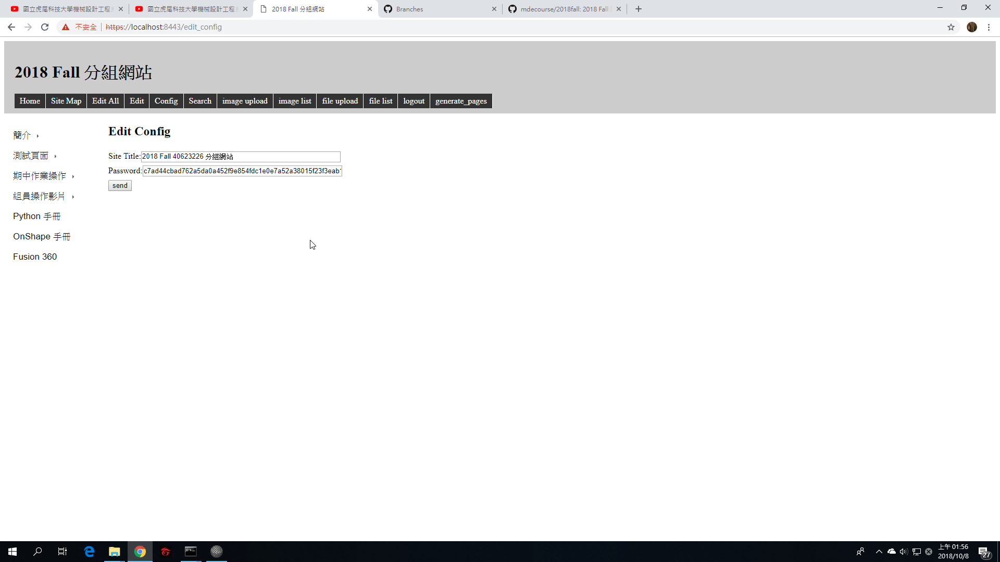

首先進入mde.tw

點選 i
接著進入Week 1

進入https://github.com/mdecourse/2018fall
並git clone到近端
接著登入帳號並建立個人倉儲

git clone到近端並把2018fall的資料丟進去
接著git add .
git commit -m "intitial add"
git config 自己信箱和username
git push上去到遠端
推上去後執行近端
把http-server.py 拉到SciTE並執行

這時近端啟動 會跑出https://localhost:8444
此時為靜態網站

要從近端改版，所以要把靜態改為動態進行改版後推上去
此時會出現動態網址 進入後可開始進行更改

需先登入 輸入密碼 admin
進入後點選 Config 更改名稱

完成後點選 generate_pages轉為靜態並利用git push推上遠端